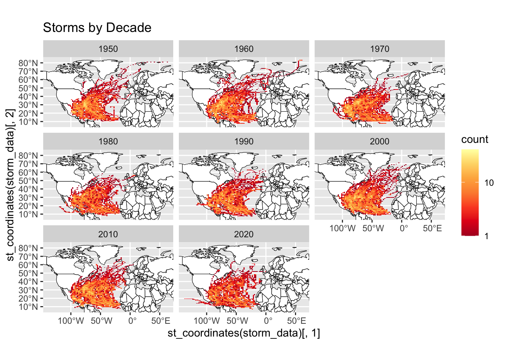

── Conflicts ────────────────────────────────────────── tidyverse_conflicts() ──
✖ dplyr::filter() masks stats::filter()
✖ dplyr::lag() masks stats::lag()
ℹ Use the conflicted package (<http://conflicted.r-lib.org/>) to force all conflicts to become errors
library(ggmap)
ℹ Google's Terms of Service: <https://mapsplatform.google.com>
Stadia Maps' Terms of Service: <https://stadiamaps.com/terms-of-service/>
OpenStreetMap's Tile Usage Policy: <https://operations.osmfoundation.org/policies/tiles/>
ℹ Please cite ggmap if you use it! Use `citation("ggmap")` for details.
library(spData)
To access larger datasets in this package, install the spDataLarge
package with: `install.packages('spDataLarge',
repos='https://nowosad.github.io/drat/', type='source')`
library(knitr)library(kableExtra)
Attaching package: 'kableExtra'
The following object is masked from 'package:dplyr':
group_rows
ggplot()+geom_sf(data=world, fill ="white", color ="black")+facet_wrap(~decade)+stat_bin2d(data = storm_data, aes(y =st_coordinates(storm_data)[, 2], x =st_coordinates(storm_data)[, 1]), bins =100)+scale_fill_distiller(palette="YlOrRd", trans="log", direction=-1, breaks =c(1,10,100,1000))+coord_sf(ylim=region[c(2,4)], xlim=region[c(1,3)])+labs(title ="Storms by Decade")

#Create table of five states with most stormsus_states <-st_transform(us_states, crs =st_crs(storm_data))#Rename columnus_states2 <- us_states %>%select(state = NAME)#spatial join between the storm database and the states object storm_states <-st_join(storm_data, us_states2, join = st_intersects, left =FALSE)#group_by(state) to group the next step by US statetop_states <- storm_states %>%group_by(state) %>%summarize(storms =length(unique(NAME))) %>%arrange(desc(storms)) %>%slice(1:5)